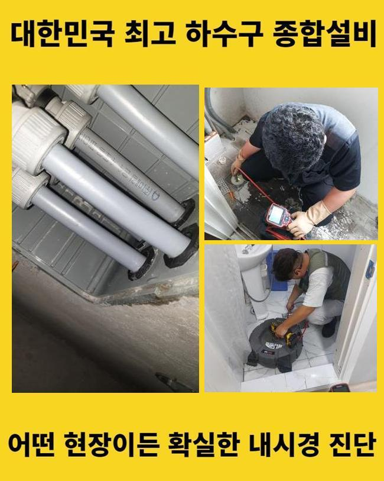
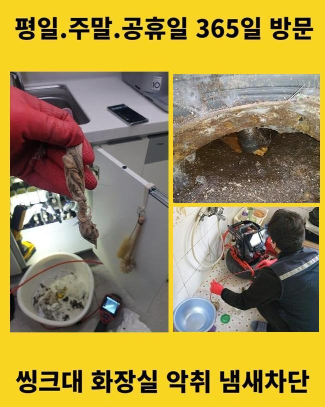
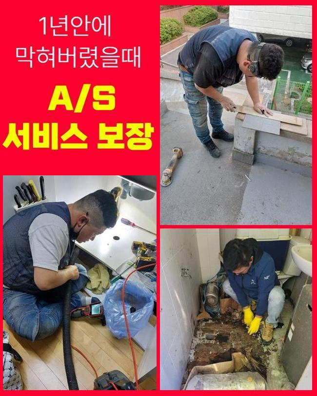
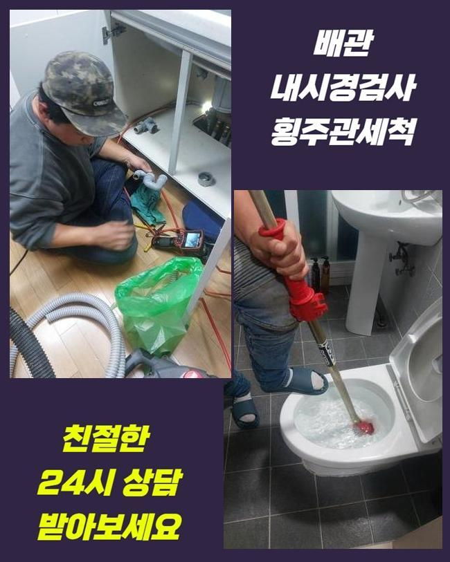
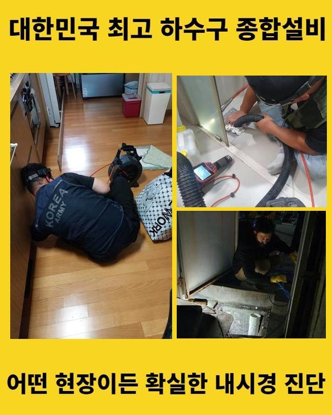

🏠 아산 온천동변기뚫음 탕정면 악취차단 출장수리
아산 변기막힘 전문 시공 후기

📋 작업 개요
- 위치: 아산
- 서비스 유형: 변기막힘, 하수구막힘, 배관막힘, 누수수리, 역류해결, 뚫는업체, 고압세척, 악취차단
- 작업 일시: 2025. 2. 6. 21:39
- 업체명: 하수구수사대 (010-5615-2118)
🔍 문제 상황
아산 온천동변기뚫음 탕정면 악취차단 출장수리
집안에서 물막힘이 일어나는 정황은 한번쯤은 경험하셨으리라 봅니다
갑작스레 주방쪽이나 화장실의 변기에서 생기는 관로막힘은 평상시 생활에 고충을 촉발시킬수 있죠
그러면 주방에선 어찌된 영문으로 정체사태가 발발하는건지 생각해봐야 하겠습니다
부엌시설물은 요리과정에서 생겨나는 여러종류의 노폐물과 석회성분 등이 배수관에 적체되어 정체가 생기는거죠
이런 상황이 지속되면 물빠짐이 안되는건 기본이고 구린내가 올라오며 시간의 흐름에 따라서 하수관이 낡게되어서 물샘까지 불러올수 있죠
어떤 분들은 이런일이 포착되었을 경우에 뚫어뻥 등을 활용해서 정리하려고 하시죠
다만 해당 대책은 단기간의 정리만 해줄뿐 원적적인 요소를 처리하지않으면 동일한 정황이 재발하기 쉽습니다
정체를 일으킨 이물들이 관로 하부에 있다면 일반인이 쉽게 목도하거나 처리하기 힘겹기 때문이랍니다
또 어설프게 장비를 사용하는경우에 반대로 배관을 훼손하거나 찌꺼기들을 올바르게 정리해낼수가 없는거랍니다
그렇기 때문에 하수관이 막히게 되면 전문가에게 의뢰하여 빠르고 정밀하게 처리하는게 바람직하다고 말씀드릴수 있어요

🔎 원인 분석
💡 전문가 진단: 정밀 진단 장비를 사용하여 슬러지의 고착 여부를 판명하고 타격/세척 작업을 실시했습니다.
어제 저희측은 하수관막힘 관련 시공문의를 받았어요
고객께선 욕실에서 생긴 배수관정체로 역류상황이 생기고 냄새까지 올라오는 바람에 평상시 생활에 고충을 감당하는 상황이었죠
구린내가 진동하는바람에 일상생활을 해나가기가 곤란한 지경이었고 역류증상까지 발발하여 화장실이 더욱 지저분해지는 형편에 이르게 되었다 하셨어요
손님분의 괴로움을 조속히 없애드리려 즉각 고장이 생긴 위치로 출동하였습니다
댁에 방문한뒤 의뢰자와 상담하고 고장상황을 자세히 검사했습니다
의뢰자께서는 욕실에서 배수가 아예 안되고 역류증세까지 간헐적으로 나타나 내부가 오염된 상황이라 말하셨어요
이주일전 쯤부터 이런 사태가 벌어지게 되었는데 내버려뒀다가 더욱더 악화한 상황이었죠
그러한 상황에서는 단조롭게 통수를 진행하는걸로는 본질적인 해결에 다가서기 힘들죠
침전물이 관로에 강하게 달라붙어있는 거라 내부의 모습을 확실하게 파악한뒤에 적합한 기기와 방식을 토대로 시공에 나서야 하겠습니다
깊은지점에서 발현된 고장은 직관적으로 검증하기 곤란한데요
그러므로 저희들은 배관카메라를 이용하여 관로내부 현황을 밀도있게 관측하는 과정을 진행하였죠
내시경cctv를 활용하여 점검하니 하수관 내측엔 상당기간 누적된 음식쓰레기와 기름때들이 엉겨서 물길을 완전하게 가로막고 있었답니다

🔧 작업 과정
게다가 이물들이 딱딱하게 고정되어서 단순히 물세정으론 해소가 힘들었죠
배관관찰을 끝낸후에 샤프트기기를 통해서 관내에 체류하는 오물들을 세척하는 일을 시행하였어요
해당 기기는 배관속에 누증된 슬러지 등을 재빠르게 와해시키고 없앨수 있기에 여러종류의 잔존물질이 굳어서 안움직일때 커다란 역할을 수행합니다
해당 기기는 회전력으로 잔재들을 미세하게 분쇄해서 배관면에 체류중인 뻣뻣한 기름찌꺼기나 각종 노폐물들을 적절하게 소제할수 있답니다
다만 너무 강력한 힘으로 파쇄해 나간다면 하수관이 망가질수도 있기에 충분한 노하우와 신중한 접근이 중요한 것이랍니다
금번에 찾아간 현장은 또한 침전물들이 배관에 견고하게 자리잡은 경우였기에 한 두차례의 가동만으로는 정리하기 어려웠답니다
관로 곳곳에 체류하는 소석회물질은 한층더 해당 사태를 어렵게했고요
그렇기에 저흰 고압세척장비와 분쇄기기를 동반하여 사용하며 노폐물을 더욱 잘게 부수고 온전히 제거하는 작업을 진행하였던 거죠
강인한 파워로 침전물을 제거할때엔 잔재들이 주변으로 흩날리지 않게 주의를 기울여야 해요
오물들이 흩어져 근방이 매우 더러워진다면 수습이 어려워질수도 있기에 주의깊은 작업이 요구되죠
그러므로 시공중에 그런 사태들을 막기 위하여 보양절차를 선행했고 고객님이 우려하지 않으시도록 세밀하게 공정을 시행하였죠
이물을 전부 처리한뒤 거듭 내시경기기를 넣어 하수관을 관찰하였어요
여전히 제거가 안된 찌꺼기나 누설여부와 같은 것들을 점검하는건 대단히 중대한 업무입니다
본 현장에선 여러번 관로 안을 탐지하여 연계하여 일어날 가망이 큰 문제들을 사전에 차단했습니다
전반적으로 노폐물들이 소멸된걸 검증한뒤 수돗물을 내려보내며 통수가 올바르게 됐는지 검사해 보았답니다
빠르게 사라지는 정황을 직각적으로 파악하였습니다
배수구로 하수가 순조롭게 빠져나가는 걸 고객분도 인지하셨고 완벽하게 마무리된것을 확인하였죠
상황을 방치하여 침전물이 한층더 늘어나게 된다면 주위세대분에게 문제가 전가될수도 있어요
그럴땐 고쳐야할 요소가 더더욱 증가할수 있어서 서둘러서 수리를 받아보시길 바랍니다


✅ 작업 완료
거기에 더해 하수구막힘은 우리의 일상생활에 커다란 애로사항이 되므로 되도록 빨리 고치시는게 좋답니다
배관막힘이 심해진다면 고약한 냄새는 물론 누수까지 나타나기 쉽다는걸 인지하고 있어야 하겠죠
공정을 시작하기 전에는 필수로 합당한 수리기기를 갖춰야 해요
그것이 미비되면 검사를 똑바로 못해서 시간적 손실까지 야기할수 있습니다
갑작스럽게 발생된 배관정체로 수선이 요망되신다면 저희쪽으로 편하게 문의해 주십시오



⚠️ 베란다 누수 및 방수 관리 방법
- ✅ 비가 많이 올 때 창틀 주변이나 아래층 천장에 얼룩이 생기는지 정기적으로 확인해 보세요.
- ✅ 우수관 주변 실리콘 마감이 들뜨거나 깨진 틈새가 있는지 손상 여부를 수시로 체크하세요.
- ✅ 베란다 바닥 타일의 줄눈(메지)이 소실되면 그 틈으로 물이 침투하여 누수가 유발됩니다.
- ✅ 누수 의심 증상 발견 시 방치하면 아래층 손실이 커지므로 즉시 전문가의 진단을 받으십시오.
💡 핵심 정리
- 확실한 장비 작업(내시경 점검 및 샤프트 스케일링)으로 원인을 뿌리 뽑습니다.
- 작업 후 1년 이내에 동일한 부위 재발 시 100% 무상 A/S 서비스를 보장합니다.
- 서울 · 경기 · 인천 전 지역에 24시간 언제든 긴급 출동할 수 있도록 항시 대기 중입니다.
❓ 자주 묻는 질문 (FAQ)
🚨 아산 변기막힘 문제로 고민이신가요?
정확한 원인 진단과 확실한 시공으로 재발 없는 해결을 약속드립니다.
24시간 긴급 출동 | 서울 · 경기 · 인천 전지역 | 1년 내 재발 시 무상 A/S